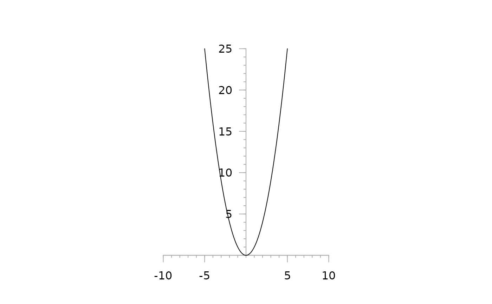
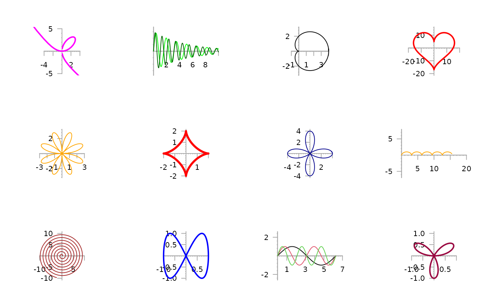

PlotFun.RdPlots mathematical expressions in one variable using the formula syntax.
a mathematical expression defined using the formula syntax: f(x) ~ x. x and y can as well be functions of a parameter t: y(t) ~ x(t) (see examples).
a list of additional parameters defined in the expression besides the independent variable.
the range over which the function will be plotted.
number: increment of the sequence.
NULL or a numeric vector of length 2; if non-NULL it provides the defaults for c(from, to) and, unless add=TRUE, selects the x-limits of the plot - see plot.window.
logical. Should polar coordinates be used? Defaults to FALSE.
plot type: see plot.default
colors of the lines.
line widths for the lines.
line type of the lines.
plotting 'character', i.e., symbol to use.
A numerical vector of the form c(bottom, left, top, right) which gives the number of lines of margin to be specified on the four sides of the plot. The default is c(3,3,3,3).
logical; if TRUE add to an already existing plot; if NA start a new plot taking the defaults for the limits and log-scaling of the x-axis from the previous plot. Taken as FALSE (with a warning if a different value is supplied) if no graphics device is open.
the dots are passed to the plot, resp. lines function.
A function can be plotted with curve. This function here adds some more features, one enabling to use a formula for defining the function to plot.
This enables as well a parametric equation to be entered straight forward. Parameters of a function can be set separatedly.
The aspect ratio y/x will be set to 1 by default. (See plot.window for details.)
If the argument axes (given in the dots) is not set to FALSE centered axis at a horizontal and vertical position of 0 will be drawn, containing major and minor ticks.
# simple quadratic function y = x^2
PlotFun(x^2 ~ x)

par(mfrow=c(3,4))
# Cartesian leaf
PlotFun(3*a*z^2 /(z^3+1) ~ 3*a*z /(z^3+1+b), args=list(a=2, b=.1), from=-10, to=10, by=0.1,
xlim=c(-5,5), ylim=c(-5,5), col="magenta", asp=1, lwd=2 )
# family of functions
PlotFun(a*exp(-x/5)*sin(n*x) ~ x, args=list(n=4, a=3), from=0, to=10, by=0.01,
col="green")
PlotFun(a*exp(-x/5)*sin(n*x) ~ x, args=list(n=6, a=3), from=0, to=10, by=0.01,
col="darkgreen", add=TRUE)
# cardioid
PlotFun(a*(1+cos(t)) ~ t, args=list(a=2), polar=TRUE, from=0, to=2*pi+0.1, by=0.01, asp=1)
PlotFun(13*cos(t) - 5*cos(2*t) - 2*cos(3*t) - cos(4*t) ~ 16*sin(t)^3,
from=0, to=2*pi, by=0.01, asp=1, xlim=c(-20,20), col="red", lwd=2)
PlotFun(a*sin(2*t)*cos(2*t) ~ t, args=list(a=6), polar=TRUE, from=0, to=2*pi+0.1, by=0.01,
col="orange")
# astroid
PlotFun(a*sin(t)^3 ~ a*cos(t)^3, args=list(a=2), from=0, to=2*pi+0.1, lwd=3, by=0.01,
col="red")
# lemniscate of Bernoulli
PlotFun((2*a^2*cos(2*t))^2 ~ t, args=list(a=1), polar=TRUE, from=0, to=2*pi+0.1, by=0.01,
col="darkblue")
# Cycloid
PlotFun(a*(1-cos(t)) ~ a*(t-sin(t)), args=list(a=0.5), from=0, to=30, by=0.01,
col="orange")
# Kreisevolvente
PlotFun(a*(sin(t) - t*cos(t)) ~ a*(cos(t) + t*sin(t)), args=list(a=0.2), from=0, to=50, by=0.01,
col="brown")
PlotFun(sin(2*t) ~ sin(t), from=0, to=2*pi, by=0.01, col="blue", lwd=2)
# multiple values for one parameter
sapply(1:3, function(a) PlotFun(sin(a*x) ~ x,
args=list(a=a), from=0, to=2*pi, by=0.01,
add=(a!=1), col=a))
#> [,1] [,2] [,3]
#> x AsIs,629 AsIs,629 AsIs,629
#> y AsIs,629 AsIs,629 AsIs,629
PlotFun(sin(3*x) ~ x, polar=TRUE, from=0, to=pi, by=0.001, col=hred, lwd=2)

PlotFun(1 + 1/10 * sin(10*x) ~ x, polar=TRUE, from=0, to=2*pi, by=0.001, col=hred)
PlotFun(sin(x) ~ cos(x), polar=FALSE, from=0, to=2*pi, by=0.01, add=TRUE, col="blue")